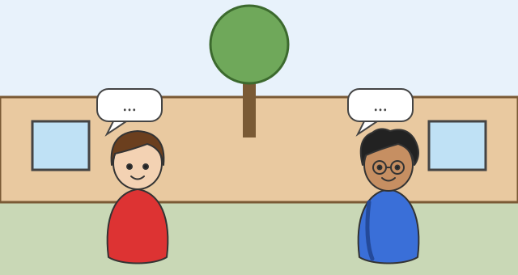

Begrüßen und Vorstellen
Mit einem KI-Tutor lernen
Ein KI-Tutor erklärt dir diese Seite und hilft dir bei den Übungen. Wähl deinen Assistenten:
Mit Claude öffnen Mit ChatGPT öffnen Mit Mistral Vibe öffnen
Du nutzt dein eigenes Konto beim Anbieter. Der Assistent ist kein Angebot von lernapps.net: lernapps liefert nur Inhalte und Übungen. Die Wahl gilt für alle Seiten, nur auf diesem Gerät.
Worum es geht

Léa (links) und Malik (rechts) treffen sich auf dem Schulhof. Was sagen sie wohl? Gleich füllst du die Sprechblasen.
Quelle: eigene Zeichnung. Lizenz: CC-BY-4.0.Auf der Seite „Laut und Schrift“ hast du gelernt, wie Französisch klingt. Jetzt benutzt du das: Léa und Malik begrüßen sich zum ersten Mal.
Danach kannst du ein kleines Gespräch auf Französisch führen: dich begrüßen, deinen Namen sagen, fragen, wie es geht, und dich verabschieden.
Neu: Das Gespräch auf dem Schulhof
So sprechen Léa und Malik miteinander. Du musst die Sätze noch nicht zerlegen, du lernst sie als Ganzes, wie ein Wort.
- Léa: Salut ! Je m'appelle Léa. Et toi ? (Hallo! Ich heiße Léa. Und du?)
- Malik: Bonjour ! Je m'appelle Malik. (Guten Tag! Ich heiße Malik.)
- Léa: Ça va ? (Wie geht's?)
- Malik: Ça va bien, merci. (Gut, danke.)
- Léa: Au revoir ! (Auf Wiedersehen!)
| Französisch | Deutsch |
|---|---|
| Salut ! | Hallo! (unter Kindern) |
| Bonjour ! | Guten Tag! (auch zu Erwachsenen) |
| Au revoir ! | Auf Wiedersehen! |
| Ça va ? | Wie geht's? |
| Ça va bien, merci. | Gut, danke. |
| Je m'appelle Léa. | Ich heiße Léa. |
| Et toi ? | Und du? |
Merke
Bei je m'appelle fehlt nie das m': Es gehört fest dazu. Das ç in ça ist ein „c“ mit einem Häkchen und klingt wie „ss“.
Kurz geübt
Übung
Lösung
Bonjour ! richtige Antwort
Richtig: Bonjour passt zu Erwachsenen und zu Menschen, die du nicht gut kennst.
Salut !
Salut sagst du zu Freunden und Kindern. Zur Lehrerin sagst du lieber Bonjour.
Au revoir !
Au revoir sagst du zum Abschied, nicht zur Begrüßung.
Ça va bien, merci.
Das ist die Antwort auf die Frage „Ça va ?“, keine Begrüßung.
Bonjour ist die höfliche Begrüßung. Salut sagt man unter Freunden und Kindern.
Mehr dazu:
Hören und nachsprechen
Léa spricht Salut ! und Au revoir ! vor, Malik Ça va bien, merci. und Bonjour ! Je m'appelle Malik. Höre zu, nimm dich selbst auf und vergleiche. Dann bewertest du dich selbst.
Übung
Hör zu, sprich nach und nimm dich auf. Vergleiche dann mit dem Original.
Tipp
Bei Ça va ? geht die Stimme am Ende nach oben, weil es eine Frage ist. Den ganzen Satz sprichst du in einem Zug.
- Salut !KI
- Ça va bien, merci.KI
- Au revoir !KI
- Bonjour ! Je m'appelle Malik.KI
Zum Aufnehmen braucht diese Übung JavaScript. Die Beispiele kannst du auch ohne anhören.
Lösung
- Salut !
- Ça va bien, merci.
- Au revoir !
- Bonjour ! Je m'appelle Malik.
Übung
Übung
Lösung
Richtige Antwort: 1. Salut !, 2. Ça va ?, 3. Ça va bien, merci., 4. Au revoir !
Zuerst begrüßt man sich (Salut !), dann fragt man, wie es geht (Ça va ?), dann antwortet man (Ça va bien, merci.), und zum Schluss verabschiedet man sich (Au revoir !).
Mehr dazu:
Übung
Lösung
Richtige Antwort: Salut ! – Hallo!; Au revoir ! – Auf Wiedersehen!; Ça va ? – Wie geht's?; Et toi ? – Und du?; Merci. – Danke.
Salut ist ein Gruß unter Kindern, au revoir verabschiedet, ça va ? fragt, wie es geht, et toi ? gibt die Frage zurück und merci heißt danke.
Mehr dazu:
Übung
Wähle das passende Wort für die Lücke.
- Ich heiße Léa. → Je … Léa.
- Auf Wiedersehen! → … !
- Gut, danke. → Ça va bien, ….
Lösung
- Je m'appelle Léa.
- Au revoir !
- Ça va bien, merci.
Übung
Höre den Satz und schreibe ihn auf. Du kannst ihn so oft hören, wie du magst.
- KI
- KI
- KI
Lösung
- Bonjour !
- Ça va bien, merci.
- Je m'appelle Malik.
Übung
Höre den Satz und schreibe ihn auf Deutsch.
- KI
Lösung
- Wie geht's?
Übung
Schreibe den Satz auf Französisch.
- Hallo! Ich heiße Malik.
- Und du?
- Gut, danke.
Lösung
- Salut ! Je m'appelle Malik.
- Et toi ?
- Ça va bien, merci.